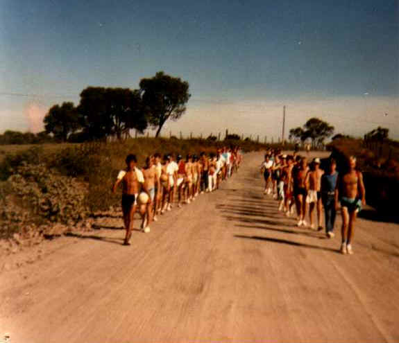
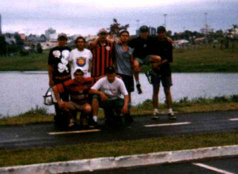

Realizada uma vez por ano, os alunos percorrem a pé o percurso de mais ou menos 20 km entre o Colégio e o Parque Recreativo do Jordão. Chegando lá são realizadas provas desportivas e almoço com alunos e professores.

1987 - A serra do Jordão ainda não tinha asfalto
Seu Flaron ajudando no almoço
1997
Prof Alacir - 1997
1998 - Saída do Colégio às 7:30
Descendo o morro
Parque do lago

Início da serra
Descida da serra (somos granjeiros até debaixo d'água)
Parque do Jordão 9:30h (Já estávamos jogando truco)
Os alunos Laudecir e Roberto ajudaram a preparar o churrasco.
Fila do suco
Almoço